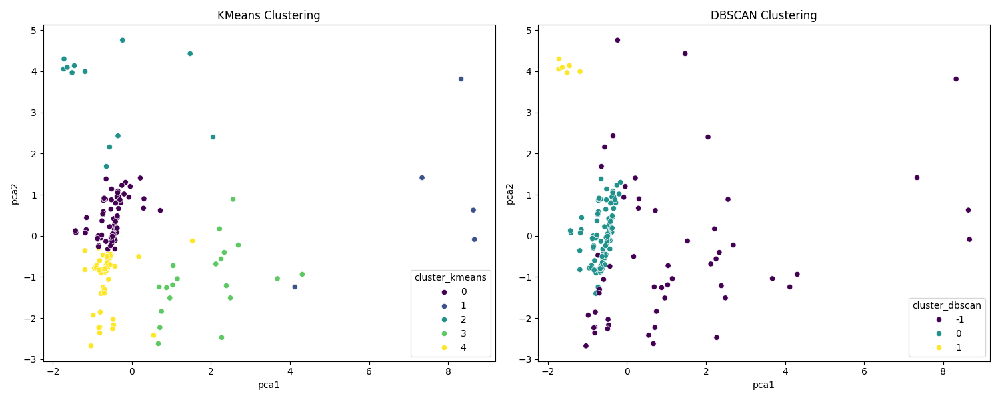

Total Rows: 162
Total Columns: 13
Memory Usage: 0.01 MB
| Data Type | Count |
|---|---|
| int64 | 6 |
| float64 | 3 |
| bool | 3 |
| int32 | 1 |
| Column | Missing Count | Missing % |
|---|---|---|
| Duration | 0 | 0.00000 |
| Pulse | 0 | 0.00000 |
| Maxpulse | 0 | 0.00000 |
| Calories | 5 | 3.08642 |
| anomaly_score_iso | 0 | 0.00000 |
| anomaly_iso | 0 | 0.00000 |
| anomaly_score_svm | 0 | 0.00000 |
| anomaly_svm | 0 | 0.00000 |
| cluster_dbscan | 0 | 0.00000 |
| anomaly_dbscan | 0 | 0.00000 |
| pca1 | 0 | 0.00000 |
| pca2 | 0 | 0.00000 |
| cluster_kmeans | 0 | 0.00000 |
Detected: 9 anomalies (5.56%)
| Duration | Pulse | Maxpulse | Calories | anomaly_score_iso | anomaly_iso |
|---|---|---|---|---|---|
| 60 | 130 | 101 | 300.0 | -1 | True |
| 210 | 108 | 160 | 1376.0 | -1 | True |
| 300 | 108 | 143 | 1500.2 | -1 | True |
| 270 | 100 | 131 | 1729.0 | -1 | True |
| 30 | 159 | 182 | 319.2 | -1 | True |
| 15 | 80 | 100 | 50.5 | -1 | True |
| 20 | 150 | 171 | 127.4 | -1 | True |
| 180 | 90 | 120 | 800.3 | -1 | True |
| 210 | 137 | 184 | 1860.4 | -1 | True |
Detected: 12 anomalies (7.41%)
| Duration | Pulse | Maxpulse | Calories | anomaly_score_iso | anomaly_iso | anomaly_score_svm | anomaly_svm |
|---|---|---|---|---|---|---|---|
| 60 | 103 | 132 | NaN | 1 | False | -1 | True |
| 80 | 123 | 146 | 643.1 | 1 | False | -1 | True |
| 210 | 108 | 160 | 1376.0 | -1 | True | -1 | True |
| 300 | 108 | 143 | 1500.2 | -1 | True | -1 | True |
| 150 | 97 | 129 | 1115.0 | 1 | False | -1 | True |
| 270 | 100 | 131 | 1729.0 | -1 | True | -1 | True |
| 180 | 101 | 127 | 600.1 | 1 | False | -1 | True |
| 90 | 90 | 100 | 500.4 | 1 | False | -1 | True |
| 210 | 137 | 184 | 1860.4 | -1 | True | -1 | True |
| 15 | 124 | 139 | 124.2 | 1 | False | -1 | True |
Detected: 56 anomalies (34.57%)
| Duration | Pulse | Maxpulse | Calories | anomaly_score_iso | anomaly_iso | anomaly_score_svm | anomaly_svm | cluster_dbscan | anomaly_dbscan |
|---|---|---|---|---|---|---|---|---|---|
| 45 | 109 | 175 | 282.4 | 1 | False | 1 | False | -1 | True |
| 45 | 90 | 112 | NaN | 1 | False | 1 | False | -1 | True |
| 60 | 130 | 101 | 300.0 | -1 | True | 1 | False | -1 | True |
| 60 | 103 | 132 | NaN | 1 | False | -1 | True | -1 | True |
| 45 | 90 | 112 | 180.1 | 1 | False | 1 | False | -1 | True |
| 80 | 123 | 146 | 643.1 | 1 | False | -1 | True | -1 | True |
| 30 | 136 | 175 | 238.0 | 1 | False | 1 | False | -1 | True |
| 60 | 118 | 121 | 413.0 | 1 | False | 1 | False | -1 | True |
| 45 | 123 | 152 | 321.0 | 1 | False | 1 | False | -1 | True |
| 210 | 108 | 160 | 1376.0 | -1 | True | -1 | True | -1 | True |
| Cluster | Count |
|---|---|
| 0 | 73 |
| 4 | 50 |
| 3 | 22 |
| 2 | 12 |
| 1 | 5 |
